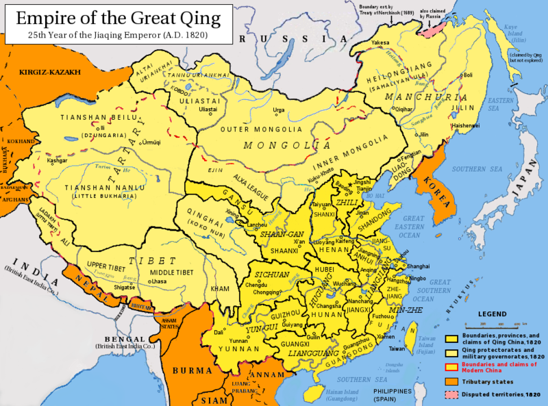
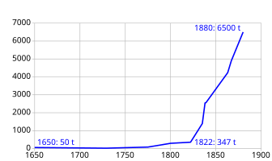
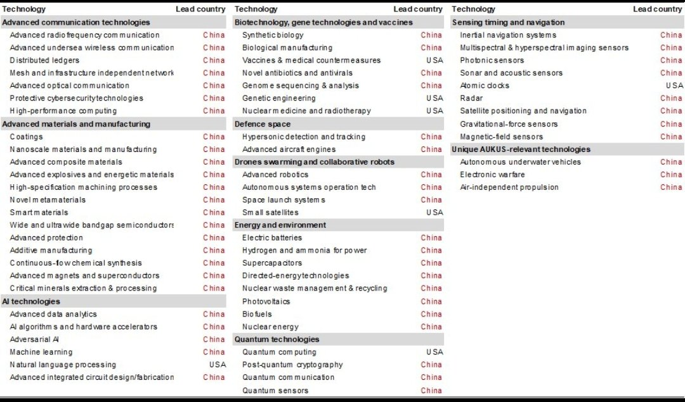

East Asia & Imperialism
Why Did China Fail To Create An Overseas Colonial Empire?
1. Introduction
If as race realists seem to believe higher intelligence reliably produces civilizational superiority, then East Asian civilizations should have dominated the world. The most technically capable civilizations on earth, possessing ships and navigational tools that their competitors lacked, looked out at the wider world and largely declined to conquer it.
– Sibo Rugwiza Kanobana, “What if race realists are right?”
Kanobana’s line is basically: If whites are so smart, why did they do imperialism? And if East Asians are so smart, why didn’t they do imperialism and slavery? From there he gestures toward Africa as having produced the closest thing to “enduring, peaceful, and ecologically sustainable outcomes”.
– Diana Fleischmann, Substack Note
Peter Frost attempted to answer Kanobana’s objection. Frost’s essay had some interesting historical information, but it also omitted a lot of important details and analysis, so his analysis is mediocre. This essay is not just a response to S. R. Kanobana and Peter Frost, but also a superior analysis.
2. East Asia And The Sinosphere
We must first consider what countries make up East Asia:
- China
- Japan
- Korea
- Taiwan
- Mongolia – Not part of Sinosphere, but is part of East Asia, geographically and genetically.
- Vietnam – Not part of geographic East Asia, but part of Sinosphere, genetically, culturally, historically.
Both Mongolia and Vietnam could be excluded from our analysis depending on how East Asia is defined. However, their national average IQs aren’t too far behind the East Asia core, so it’s worth considering them anyway.
It’s easy to see why Korea, Taiwan, and Vietnam never created empires that were comparable in size to the European powers. Their populations were simply too small and they were surrounded by much more powerful neighbors like China and Japan, which both controlled all three countries at some point. It’s doubtful that Korea, Taiwan, and Vietnam ever could’ve created large empires, even if they tried. If anything, the territories that Korea and Vietnam had both managed to expand to at their greatest extents were appropriate accomplishments, given their population sizes and geopolitical environments.
3. Mongolia, Japan, and China
The remaining countries to analyze are China, Japan, and Mongolia.
Neither Kanobana nor Frost mentioned the Mongol Empire. It was the second largest empire in history by land area, behind only the British. Culturally and historically, Mongolia could be considered closer to Central Asia and external to East Asia, since Mongolia is not part of the Sinosphere. However, Mongolian ancestry is placed within the broader Northeast Asian genetic cluster, so I still think the Mongol Empire is worth noting.
Frost acknowledged the Japanese Empire. Unlike most other countries in 1800s East Asia, Japan had industrial technology, scarce resources, and the right society and mindset to establish overseas colonies and many puppet states. Japan was the only East Asian country which colonized overseas, even if its puppet states beyond Korea and Taiwan were relatively short-lived.
Since Japan and Mongolia both created sizable empires at one point, and the smaller East Asian countries were too small to create great empires of their own, a more thoughtful historical analysis would rephrase the question as: Why didn’t China specifically create a great empire?
The Chinese were definitely capable of naval navigation and exploring distant lands:
- The Chinese sailed around and traded the Philippines from the 800s and onward.
- Zheng He led the Ming treasure voyages from 1405 to 1433.
- Many Chinese had settled Malaysia in 1400s and onwards and Thailand during the 1700s and 1800s.
The Chinese probably could’ve conquered these lands and more if they tried. So why didn’t they?
4. Chinese Imperialism
To some extent, the premise in the preceding questions is wrong. China did colonize many neighboring nations from their initial Yellow River Valley, just not overseas like the Europeans did from the 1500s and onwards. The territory of modern China is 1.5 times the size of Europe. The Qing Empire conquered a lot of new territory in the 1700s and had many tribute states at the height of its power in 1820, 19 years before the First Opium War. Even the Mongols and Manchus ended up assimilating into China among the Han Chinese. And unlike Europe, China mostly kept its contiguous land colonies in the end.

There were also philosophical reasons why China avoided colonizing overseas. The Chinese traditionally viewed their civilization as the cultural and political center of the world (the “Middle Kingdom”).[1] Instead of colonizing, the Chinese established a system of tribute where other states acknowledged China’s supremacy in exchange for trade rights and diplomatic recognition. Confucianism also favors stability, order, and self-sufficiency over aggressive territorial expansion.
China also had practical geopolitical reasons for focusing inland. China had faced aggressive nomadic groups from the North throughout its history, including the Xiongnu, Mongols, and the Manchus. These opponents were the reason why China built its Great Walls. In just the past 1000 years, the Great Walls failed twice to protect China from foreign threats when inland invaders conquered China and established the Yuan and Qing dynasties. Establishing maritime colonies would’ve required diverting China’s military and resources from inland to overseas. Given China’s history, it was perfectly rational for them to be more concerned with defending and conquering inland.
Lastly, the Chinese already had all the resources that they wanted in their homeland, so there was little reason from them to leave it. China didn’t have the same scarcity of resources as Europe, Japan, or Mongolia. Resource acquisition is the most important motive for colonialism.
More Details From A Qing Historian: Q&A: Why did China never build a colonial empire?
5. Why China Is Not Considered To Be A Colonial Power
Generally speaking, all organized political entities will expand their territories and absorb other disorganized populations to the extent that the environments let them in the long term. That’s probably true among all humans, regardless of their psychological differences. There were many empires and migrations across the Earth throughout its history. If nearly region across the world can be considered a colonial power from that historical sense, then no one is a colonial power.
In this essay, we’re mainly focused on empires during the Age of Imperialism. While China has nearly 3000 years of imperial history, China typically isn’t considered to be a colonial power (alongside the European empires) because China faced a century of humiliation from the mid-1800s to the mid-1900s. China was subjected to multiple unequal treaties by the countries of the Eight-Nation Alliance. The Japanese Empire also invaded China and created Manchukuo, Mengjiang, and the Wang Jingwei regime as Japanese puppet states within China’s territory. These events raise the question: Why was China dominated by Europeans powers, if the Han Chinese have higher IQs than Europeans?
6. China’s Unique Disadvantages
Unequal treaties, like the 1858 Ansei Treaties, were imposed on Japan too. But Japan was able to avoid further unequal treaties, and even reversed the existing ones in 1899 and 1911. To some extent, Japan’s relatively fewer resources and goods compared to China was a factor for protecting Japan against European imperialism and further unequal treaties. The Europeans were more focused on obtaining Chinese goods, rather than Japanese goods, because China had more goods to take. This likely gave Japan a slight advantage over China during the Age of Imperialism.
Each time China had to give over more concessions with each new unequal treaty, it only became harder and harder for China to stand up for itself and move forward. The opium epidemic in China also surely weakened China’s ability to defend itself and fight for its interests in the 1800s to at least some extent.

Figure 2: Opium imports into China 1650-1880, CC BY-SA 4.0, by TilmannR.
{kind=link}
We should also recall that China had to fight the collective powers of the Eight-Nation Alliance. Is it any surprise that China was forced to as many concessions as they were when they faced such a lopsided amount of power from so many opponents? China also had weaker political unity than the Western powers and Japan. The Taiping Rebellion was an example of that.
7. How Did Christianity Affect Imperialism?
Peter Frost wrote that Christianity helped build European institutions. I dislike some of the descriptions made by Frost in that section of the essay. It initially wasn’t clear to me what Frost meant by saying that Christianity made European empires “more sustainable” or how “religion acted as a check on state overreach”. I thought these descriptions were confusing or ambiguous. To convey the most important points, I simply would’ve said that Christianity advanced European civilization, which enabled earlier industrialization, and thus earlier (and more robust) colonization.
Christianity also motivated imperialism. Missionaries believed that they had a theological imperative to proselytize all the non-Christians of the world. East Asia didn’t have anything comparable to the religious rationale that Europe had for colonization and imperialism, so that is another factor.
Peter Frost argued that isolationism was the main reason why most of East Asia did not establish overseas colonies. East Asia’s isolationism was attributed to a fear of foreign religions. I won’t rehash why East Asia feared foreign religions, but I will say that it wasn’t sufficient for motivating isolationism. Isolationism was also motivated by a lack of desire for foreign goods.
Isolationism doesn’t explain everything either. Even though Japan was isolationist for centuries, Japan still managed to build an empire on par with the European empires, whereas China did not. So, isolationism cannot fully explain why China failed to rival Western and Japanese imperialism during the 1800s and 1900s.
8. Resources: The Main Incentive For Colonialism
China’s resource independence was important for causing the First Opium War from 1839-1842. The British were desperate to find things to sell and countertrade with the Chinese so that they could reduce their trade deficit and bring more valuable Chinese goods back home. But even with a global empire, the British still didn’t have anything that was sufficiently profitable, besides opium. So, the British resorted to forcing China to buy the opium that they were growing in British India, because that was essentially all they had to reduce their trade deficit.
Japan was isolationist for over 200 years (aside from its contact with the Dutch), until the Perry Expedition forced Japan to open trade and relations with the outside world. When Japan was isolationist, the Japanese didn’t need resources from the outside world either. That changed when Japan started industrializing. Suddenly, the Japanese needed to acquire oil, coal, iron ore, rubber, tin, timber, land, food, and conscripted labor in order to supply their rapidly industrializing economy.
Similarly, China probably would’ve been more keen on colonization if they had more modern technology that would’ve caused them to demand resources that aren’t found in abundance in China. Europe and Japan managed to industrialize about a whole century before China did. In both cases, Europe and Japan’s industrialization increased their demands for resources, which motivated them to create empires. Conceivably, Qing China also would’ve created an empire for meeting the resource demands of industrialization, if they had the technology and infrastructure that needed it. Humans never stay isolationist when they need to get resources from other lands. Throughout history, resource scarcity has always been the prime motivator for human migrations, foreign invasions, and war. Life itself is driven by a competition for scarce resources.
If industrialization increases the demand for resources, which in turn motivates colonialism, then this raises the question: Why didn’t China industrialize earlier?
9. What If East Asia Ended Its Isolation Earlier?
Isolationism definitely inhibited East Asian industrialization, not just imperial ambitions. The more isolationist a society is, then harder it is to make technological progress. It was inevitable that isolation was going to end eventually, but East Asia didn’t realize that at the time. It also could’ve been undesirable to end isolationism earlier. East Asia did have some legitimate reasons to fear foreign religions, and East Asian statesmen feared that foreigners could’ve threatened their political power.
If China and Japan had ended their isolationist eras decades earlier, they could’ve potentially acquired new technologies in the early 1800s, thus enabling them to industrialize faster and earlier. If China industrialized a century earlier like Japan had done, then China probably could’ve and would’ve built an imperial overseas empire too. If China had industrialized as the same pace as Europe, then the Western powers and Japan would’ve been less likely to have subjugated China, especially if China also remained politically unified and built a more capable military. Under these three conditions, China could’ve been an imperial power in its own right.
In fact, if China gained imperial ambitions around the same time as Japan, China could’ve been competing or fighting against Japan, more similarly to how the European imperial powers competed and fought against each other for territory. China has a much larger population than Japan, so Japan would be no match against a unified China, whenever they have similar levels of technology. In such a scenario, China could’ve potentially subjugated Japan, unlike in our timeline.
10. Why Did Europe Industrialize Before East Asia?
One of the great mysteries of history, with many hypotheses but no definitive answers, is why China, which for much of history was the most technologically advanced and economically and administratively sophisticated state on Earth, with more high-IQ individuals than the rest of the world combined, never even came close to the Scientific and Industrial Revolutions. I speculate that the comparatively atheoretical nature of Chinese thought is why Chinese science was so puny that they did not know the Earth was round until the Jesuits told them in the 16th century. By comparison, the Greeks figured it out in the Classical era and Eratosthenes even estimated the circumference to within 1% of the true value. The picture for mathematics and philosophy is similar. Chinese history is full of geniuses and polymaths. But without theory, which requires rationality, the Chinese could never build on each other’s work or develop world models by debunking each other. They could only argue and assert.
– Arctotherium, Source
First off, the Chinese (or at least their most educated) were aware that the Earth was spherical far earlier than the 1500s. The spherical Earth model was rather widely accepted during the Yuan dynasty (1271-1368 CE) when Persian and Arab astronomers brought their astronomical knowledge to China. There were also some astronomical observations within China made centuries prior to that which suggested a spherical model, even if such a model wasn’t widely known or accepted back then. While the spherical Earth concept is an interesting example to think about, I don’t think it’s representative of the history of European vs East Asian knowledge.
Nevertheless, Arctotherium does make a good point about how Chinese thought has been seemingly less theoretical and abstract than European thought. Abstraction does require rationality, but I wouldn’t jump to saying that the Chinese were irrational. Maybe they were less rational in the sense that it took them longer to industrialize and develop industrial technologies. But rationality has to be defined.

Europe currently leads in Nobel Prizes and Fields Medals, whereas Asia does not. Meanwhile, China currently leads in technology patents and academic research. To me, it seems that Europeans are generally more interested in abstract and theoretical ideas, whereas East Asians are generally more interested in applied knowledge. But even if that pattern is true, I don’t think it could explain why Europe industrialized before East Asia.
Modern civilization emerged over the last 500 years or so, by a virtuous cycle. This process involved the following:
- An increase in the human population.
- An increase in economic production.
- An increase in scientific knowledge.
- An increase in technological complexity and power.
- An increase in energy extraction.
- An increase in social complexity and scale.
These things increased together, because each enables the others.
– T. K. Van Allen, “How Modern Civilization Emerged” from Lucifer’s Question
I think the most likely answer is that Europe reached the initial conditions for starting the feedback loops that cause industrialization before China. Christianity promoted education and institutions, the Western European Marriage Pattern increased economic development, and Europe’s genetic ability for intelligence was sufficiently high. The “bad emperor” problem mentioned by Francis Fukuyama is also interesting. It could partially explain why Qing civilization fell behind European civilization.
Read More: The IQ of Europeans vs East Asians.
11. Final Conclusions
China probably could’ve and would’ve become a colonial power alongside Japan and the Western Powers in the 1800s if they had industrialized by 150 years earlier or more. The Chinese could’ve done this by ending isolationism earlier, and/or by industrializing faster. As soon as China started industrializing, the country would’ve had a strong economic incentives to acquire new resources and an apt ability to compete against other countries geopolitically militarily. That being said, East Asians are probably just as capable at building colonial empires as Europeans, when both races are placed in equal environments.
Could East Asia have industrialized before Europe while remaining isolationist? – Maybe. Either way, in the grand scheme of history, the Europeans industrialized before the East Asians by only 100 to 200 years. That’s actually not a big gap when you think about it. It seems like a big gap to a lot of people living today because the past 200 years is recent history. If history is viewed by millennia instead of centuries, then the East Asians industrialized not too far after the Europeans did. As the years and centuries pass, the industrialization gap will seem smaller and smaller. In the modern day, China has caught up technologically, economically, and militarily.
By contrast, the rest of the world has not caught up to Europe and East Asia. Some countries may never will, which signifies a truly big gap away from the Europeans and East Asians.
China faced a century of humiliation. But not everybody can always be a victor:
- Spain lost the Spanish-American War to the United States.
- Russia lost the Russo-Japanese War to Japan in 1905.
- France lost to Franco-Prussian war to Prussia.
- Germany lost World War I and II to France, Great Britain, and the United States.
- And so on.
My point here is that that there were several occasions where the European powers were defeated by other powers (each other). I don’t think the geopolitical defeat of China by the European powers in the 1800s necessarily implies that China was definitively incapable of building a comparable colonial empire.
China had been the most powerful, most technologically advanced society for most of human history. European world dominance from 1800 to 2000 is largely exceptional to the greater overarching historical pattern. Given the historical pattern and the higher IQ of East Asians, it’s reasonable to suspect that East Asia will overtake Europe in the coming decades, thus reclaiming its historical status as the world’s most technologically advanced region on Earth. If the United States hadn’t been brain-draining the rest of the world, China probably may have already surpassed the US in technological innovation, if they have not already done so.
Footnotes:
Germany initially had a similar mindset to China in the mid-1800s. Otto von Bismarck wasn’t interested in colonizing overseas because he saw Europe as the only geopolitical theater that was worth being concerned with, until he acquiesced to elite and popular opinion. As a consequence, Germany had fewer overseas colonies than Britain or France.